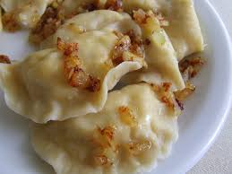
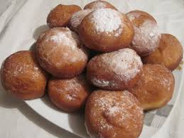
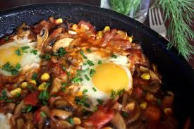
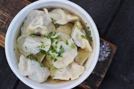

Bułeczki cynamonowe są bardzo lubiane w mojej rodzinie i dość często je robię. Są idealne na deser, słodką przekąskę, ale osobiście najbardziej lubię jeść je na śniadanie. Smakują zarówno na ciepło, zaraz po wyjęciu z piekarnika, jak i po ostygnięciu.Robiłam je już z kilku przepisów, ale ten jest zdecydowanie najlepszy. Bułeczki wychodzą miękkie, puszyste i przepyszne, a ciasto wspaniale wyrasta.
Rogaliki
Jeden z moich ulubionych przepisów na "słodkości".Dla mnie najmilszy poranek to taki, kiedy na talerzu śniadaniowym leżą rogaliki drożdżowe.Idealne na niedzielne niespieszne przebudzenie, piątkowe wieczory, środowe popołudnia i w każdym innym czasie. Nie da się przejść obok nich obojętnie oraz poprzestać na zjedzeniu tylko jednego. Są proste do zrobienia i nieziemskie w smaku.
Pierogi ruskie

Pierogi ruskie to ulubione danie zarówno moich dzieci oraz wnuków.Jednocześnie jest to też jedno z najbardziej popularnych polskich dań.Ich nazwa wywodzi się od Rusi Czerwonej i nie należy jej mylić z Rosją. Jeszcze w XIX wieku nazwą tą określano pierogi pieczone z przeróżnym nadzieniem. Dziś pod tym pojęciem kryje się połączenie pierogowego ciasta i pysznego farszu twarogowo-ziemniaczanego.
Śledzie z orzechami i śliwkami
Śledzie z orzechami włoskimi i suszonymi śliwkami to idealna propozycja nie tylko na wigilijny stół,ale również na wszelkiego rodzaju imprezy oraz spotkania ze znajomymi. Słony i lekko kwaśny smak śledzia w połączeniu ze słodyczą śliwek daje oryginalny i niepowtarzalny efekt. W dodatku śliwki dzięki wysokiej zawartości błonnika działają zbawiennie na organizm.
Sałatka z bobem i jajkiem
Ta sałatka jest idealna na wiosenno-letnie przyjęcia, obiady czy jako dodatek do grillowanych mięs.Jest bardzo prosta i szybka w wykonaniu, a jednocześnie niepowtarzalna i sycąca. Zawiera w sobie bób, który jest bardzo zdrowy-zawiera w sobie witaminy z grupy B oraz dużo kwsu foliwoego, a także jest niskokaloryczny.Sałatkę można robić w sezonie ze świeżego bobu, albo poza nim z bobu mrożonego
Tarta z jabłkami
Tarta z jabłkami kojarzy mi się niezmiennie z jesienią-pogoda za oknem nie zachęca do wychodzenia, najlepszym rozwiązaniem w takiej sytuacji jest pyszna dobra herbata, wciągająca książka, koc i kawałek pysznej, najlepiej jeszcze ciepłej tarty pachnącej jabłkami i cynamonem.Ciasto bardzo proste w wykonaniu, ale nigdy się nie nudzi i zawsze smakuje fenomenalnie.
Pączki

Wypróbowałam już bardzo dużo przepisów na pączki, jednak żadne z nich nie były idealne. Dopiero przepis,który dziś preenutuję, pochodzący z "Kuchni Polskiej" spełnił moje oczekiwania w stu procentach.Te pączki zawsze się udają, są mięciutkie, nie chłoną za dużo tłuszczu-uwielbiam je jeść jeszcze na gorąco.
Szakszuka

Szakszuka może być podawana na śniadanie, lekki obiad lub jako kolacja na ciepło.Pierwszy raz jadłam ją na wakacjach w Tunezji i po prostu zakochałam się w tym daniu.Po powrocie robiłam jąjuż wiele razy, często modyfikując oryginalny przepis i dodając do niego po prostu to, co akurat miałam w lodówce-zawsze wychodzi pysznie.
Sałatka z szynką i ananasem
Sałatka jest prosta i szybka w wykonaniu. Idealna na spotkania z przyjaciólmi, imprezy, ale także do podania na świątecznych stołach lub przy innych bardziej podniosłych okazjach.W sałatce idealne jest połączenie wytrawnego smaku szynki i słodyczy ananasa, dzięki czemu sałatka ma bardzo oryginalny smak, jest soczysta i lekka.
Kołduny

Kołduny to jedno z ulubionych dań z mojego dzieciństwa.Jest to danie dość pracochłonne, ale warte zachodu. Ja robię je według przepicu Maćka Kuronia. Podawać je można na wiele sposobów: w rosole, w barszczu lub innych zupach albo jako samodzielne danie z masełkiem lub cebulką.
 Śledzie z orzechami włoskimi i suszonymi śliwkami to idealna propozycja nie tylko na wigilijny stół,ale również na wszelkiego rodzaju imprezy oraz spotkania ze znajomymi. Słony i lekko kwaśny smak śledzia w połączeniu ze słodyczą śliwek daje oryginalny i niepowtarzalny efekt. W dodatku śliwki dzięki wysokiej zawartości błonnika działają zbawiennie na organizm.
Śledzie z orzechami włoskimi i suszonymi śliwkami to idealna propozycja nie tylko na wigilijny stół,ale również na wszelkiego rodzaju imprezy oraz spotkania ze znajomymi. Słony i lekko kwaśny smak śledzia w połączeniu ze słodyczą śliwek daje oryginalny i niepowtarzalny efekt. W dodatku śliwki dzięki wysokiej zawartości błonnika działają zbawiennie na organizm. Ta sałatka jest idealna na wiosenno-letnie przyjęcia, obiady czy jako dodatek do grillowanych mięs.Jest bardzo prosta i szybka w wykonaniu, a jednocześnie niepowtarzalna i sycąca. Zawiera w sobie bób, który jest bardzo zdrowy-zawiera w sobie witaminy z grupy B oraz dużo kwsu foliwoego, a także jest niskokaloryczny.Sałatkę można robić w sezonie ze świeżego bobu, albo poza nim z bobu mrożonego
Ta sałatka jest idealna na wiosenno-letnie przyjęcia, obiady czy jako dodatek do grillowanych mięs.Jest bardzo prosta i szybka w wykonaniu, a jednocześnie niepowtarzalna i sycąca. Zawiera w sobie bób, który jest bardzo zdrowy-zawiera w sobie witaminy z grupy B oraz dużo kwsu foliwoego, a także jest niskokaloryczny.Sałatkę można robić w sezonie ze świeżego bobu, albo poza nim z bobu mrożonego Tarta z jabłkami kojarzy mi się niezmiennie z jesienią-pogoda za oknem nie zachęca do wychodzenia, najlepszym rozwiązaniem w takiej sytuacji jest pyszna dobra herbata, wciągająca książka, koc i kawałek pysznej, najlepiej jeszcze ciepłej tarty pachnącej jabłkami i cynamonem.Ciasto bardzo proste w wykonaniu, ale nigdy się nie nudzi i zawsze smakuje fenomenalnie.
Tarta z jabłkami kojarzy mi się niezmiennie z jesienią-pogoda za oknem nie zachęca do wychodzenia, najlepszym rozwiązaniem w takiej sytuacji jest pyszna dobra herbata, wciągająca książka, koc i kawałek pysznej, najlepiej jeszcze ciepłej tarty pachnącej jabłkami i cynamonem.Ciasto bardzo proste w wykonaniu, ale nigdy się nie nudzi i zawsze smakuje fenomenalnie. Sałatka jest prosta i szybka w wykonaniu. Idealna na spotkania z przyjaciólmi, imprezy, ale także do podania na świątecznych stołach lub przy innych bardziej podniosłych okazjach.W sałatce idealne jest połączenie wytrawnego smaku szynki i słodyczy ananasa, dzięki czemu sałatka ma bardzo oryginalny smak, jest soczysta i lekka.
Sałatka jest prosta i szybka w wykonaniu. Idealna na spotkania z przyjaciólmi, imprezy, ale także do podania na świątecznych stołach lub przy innych bardziej podniosłych okazjach.W sałatce idealne jest połączenie wytrawnego smaku szynki i słodyczy ananasa, dzięki czemu sałatka ma bardzo oryginalny smak, jest soczysta i lekka.